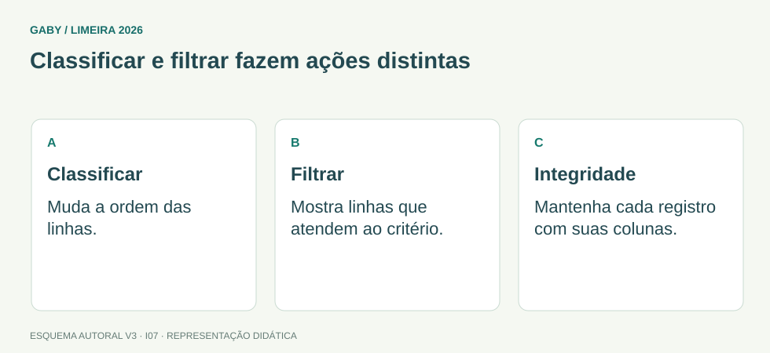

Objetivos do módulo
- Entender classificação e filtragem.
- Escolher gráficos adequados.
- Reconhecer importação de dados e recursos de impressão.
- Usar a caixa Classificar (cabeçalhos, níveis, cor, lista personalizada) e os comandos Limpar e Reaplicar do filtro.
- Montar uma Tabela Dinâmica: áreas, função de resumo, Contagem Distinta e atualização.
- Escolher o tipo de gráfico pelo que se quer mostrar e saber os caminhos para criá-lo (guia Inserir, Alt+F1, F11, Análise Rápida).
- Diferenciar Validação de Dados, realce de valores duplicados, Remover Duplicatas e Consolidar.
- Entender o Power Query: obter dados, Mesclar, Acrescentar e níveis de privacidade.
Classificar e filtrar fazem ações distintas

Descrição em texto do esquema
- Classificar: Muda a ordem das linhas.
- Filtrar: Mostra linhas que atendem ao critério.
- Integridade: Mantenha cada registro com suas colunas.
Oficina visual · aplique o esquema
Uma tabela tem nome, setor e nota. Você precisa mostrar somente o setor A e ordenar da maior nota para a menor. O que usar?
Atividade autoral complementar da V3. Registre sua resposta; a resolução está no arquivo de gabarito e revisão.
Mapa do conteúdo
1. Classificar x filtrar
Referência desta aula: Excel do Microsoft 365 para Windows, em português do Brasil. Os nomes de guias, botões e caixas são os dessa versão. Quando provas ou versões anteriores usam outro rótulo para o mesmo comando, a aula avisa.
Classificar muda a ordem de exibição dos registros segundo critérios (A-Z, maior-menor, múltiplos níveis). Filtrar oculta temporariamente linhas que não atendem aos critérios, sem apagá-las.
Onde ficam os comandos
Guia Dados, grupo Classificar e Filtrar: Classificar de A a Z, Classificar de Z a A, Classificar..., Filtro, Limpar, Reaplicar e Avançado. Os mesmos comandos aparecem em Página Inicial > Classificar e Filtrar.
A caixa de diálogo Classificar
Dados > Classificar... abre a caixa em que se monta uma classificação completa.
| Elemento da caixa | Para que serve |
|---|---|
| Meus dados têm cabeçalhos | Marcada: a primeira linha é tratada como título, fica fora da ordenação e os nomes das colunas aparecem em Classificar por. Desmarcada: a primeira linha é ordenada como um registro qualquer. A mesma caixa também aparece escrita como “Meus dados contêm cabeçalhos”. |
| Classificar por | Coluna usada como critério do nível. |
| Classificar em | O que será comparado: Valores das Células, Cor da Célula, Cor da Fonte ou Ícone de Formatação Condicional. Comprimento do texto, comentário e texto da fórmula não são critérios. |
| Ordem | De A a Z, De Z a A (para números, do menor para o maior ou o contrário) ou Lista Personalizada.... Para cor ou ícone, escolhe-se a cor e se ela vai para o início ou para o fim. |
| Adicionar Nível | Cria outro critério, usado só para desempatar o nível de cima. São aceitos até 64 níveis. |
| Opções... | Orientação (de cima para baixo ou da esquerda para a direita) e diferenciação de maiúsculas e minúsculas. |
Prioridade dos níveis. O primeiro nível manda; o segundo só decide a ordem entre as linhas empatadas no primeiro. Para listar os alunos por turma e, dentro de cada turma, em ordem alfabética, o primeiro nível é Turma e o segundo é Aluno. Invertendo os níveis, a lista fica em ordem alfabética geral e as turmas se misturam.
Cabeçalho em uma única linha. O Excel reconhece os títulos quando eles ocupam uma só linha, com um nome por coluna. Título em duas linhas ou repetido no meio dos dados acaba classificado como se fosse registro. Se o título for longo, quebre o texto dentro da própria célula.
Classificar por cor. Se os processos urgentes foram marcados com fonte vermelha, escolha a coluna, Classificar em = Cor da Fonte, a cor vermelha e a posição no início. As linhas marcadas sobem; nada é apagado.
Lista personalizada. Serve quando a ordem desejada não é alfabética nem numérica. Com os tamanhos Pequeno, Médio e Grande, a ordem de A a Z daria Grande, Médio, Pequeno. Em Ordem > Lista Personalizada..., digita-se a sequência Pequeno, Médio, Grande, e o Excel passa a segui-la.
Cuidados antes de classificar
- Números armazenados como texto. O Excel coloca os números de verdade antes dos números guardados como texto. Uma coluna com os números 7, 12 e 105 e o texto “40” fica 7, 12, 105, 40 na ordem crescente. Uniformize o tipo antes: use o aviso da célula (Converter em Número) ou a função VALOR;
=VALOR("40")devolve o número 40. - Datas importadas como texto. Texto é comparado caractere por caractere, não pelo calendário: “02/12/2025” fica antes de “15/01/2025”, porque 0 vem antes de 1. Converta os valores em datas reconhecidas pelo Excel e só então classifique.
- Espaços iniciais. Dados importados podem trazer espaços antes do texto, e o espaço vem antes de qualquer letra: “ Bruno” aparece antes de “Ana”. Remova os espaços indevidos;
=ARRUMAR(" Bruno")devolve “Bruno”, sem mexer na grafia do nome. - Intervalo inteiro. Classifique a lista toda, não uma coluna isolada, para que cada registro continue com seus dados.
Reaplicar e voltar à ordem original
Filtro e classificação não se refazem sozinhos. Se os dados mudaram, ou se a coluna usada como critério tem fórmulas e os resultados mudaram no recálculo, use Dados > Reaplicar (Ctrl+Alt+L): o Excel avalia de novo os mesmos critérios sobre os valores atuais.
Não existe comando para “desclassificar”. Desfazer (Ctrl+Z) só vale enquanto o histórico existir; depois de fechar o arquivo, ele se perde. Para poder voltar à ordem original, crie antes uma coluna de índice (1, 2, 3...) e, quando precisar, classifique por ela.
Classificar da esquerda para a direita
Em Classificar... > Opções... > Orientação, a opção “Classificar da esquerda para a direita” reordena colunas em vez de linhas. Ela só existe para intervalos comuns. Uma Tabela do Excel não aceita essa orientação: é preciso convertê-la em intervalo antes (seção 3).
Filtro: ligar, limpar e reaplicar
| O que se quer | Comando | Efeito |
|---|---|---|
| Ligar ou desligar o filtro | Dados > Filtro ou Ctrl+Shift+L | Mostra ou retira as setas dos cabeçalhos. Desligar remove todos os filtros de uma vez. |
| Tirar o filtro de uma só coluna | Seta da coluna > Limpar Filtro de “nome da coluna” | Os filtros das outras colunas continuam valendo. |
| Tirar todos os filtros | Dados > Limpar | Todas as linhas voltam a aparecer; as setas permanecem. |
| Refazer o filtro após alterar dados | Dados > Reaplicar (Ctrl+Alt+L) | Recalcula quais linhas atendem aos critérios já definidos. |
Exemplo: uma lista de boletos está filtrada por Bairro = Centro e por Prazo = Vencido. Para ver todos os boletos do Centro, abra a seta de Prazo e use Limpar Filtro de “Prazo”. Dados > Limpar derrubaria também o filtro de Bairro.
2. Gráficos
Colunas/barras comparam categorias; linhas mostram evolução temporal; setores/pizza destacam composição de um todo com poucas categorias. A escolha inadequada pode dificultar interpretação.
Como criar um gráfico
- Guia Inserir, grupo Gráficos. O botão Gráficos Recomendados analisa os dados selecionados e sugere tipos adequados. Ele abre a caixa Inserir Gráfico, que tem duas guias: Gráficos Recomendados e Todos os Gráficos. No mesmo grupo ficam os botões de cada família (colunas ou barras, linhas ou áreas, pizza ou rosca, estatística, dispersão ou bolha etc.) e o botão Gráfico Dinâmico.
- Alt+F1. Cria na hora um gráfico incorporado, isto é, um objeto dentro da própria planilha, com o tipo padrão (colunas).
- F11. Cria o gráfico em uma folha de gráfico separada, uma guia nova só para ele.
- Análise Rápida (Ctrl+Q), guia Gráficos: ver seção 7.
O gráfico acompanha os dados
Um gráfico comum fica ligado às células de origem. Se um valor da origem muda, o gráfico muda sozinho; não é preciso recriá-lo nem trocá-lo por outro tipo de gráfico. O Gráfico Dinâmico é outra coisa: é o gráfico ligado a uma Tabela Dinâmica (seção 6), e não um requisito para atualizar gráficos.
Tipos de gráfico e quando usar
| Tipo | O que mostra | Exemplo de uso |
|---|---|---|
| Colunas e Barras | Comparação entre categorias (colunas na vertical, barras na horizontal). | Matrículas por escola. |
| Linhas | Evolução ao longo do tempo, com categorias igualmente espaçadas. | Atendimentos mês a mês. |
| Pizza (setores) | Partes de um todo, com uma única série e poucas categorias. | Participação de 4 secretarias no orçamento. |
| Rosca | Também partes de um todo, mas em anéis; aceita mais de uma série (um anel por série). | Composição do orçamento em dois anos. |
| X Y (Dispersão) | Pares de valores numéricos: os dois eixos são numéricos, e os pontos ficam onde os valores mandam, em intervalos irregulares. | Horas de estudo (X) e nota (Y) de cada aluno. |
| Bolhas | Dispersão com um terceiro valor numérico, representado pelo tamanho da bolha. | Distância (X), custo (Y) e número de alunos (tamanho) de cada rota escolar. |
| Histograma | Distribuição de uma variável numérica: os valores são agrupados em faixas, e cada coluna mostra quantos caem na faixa. | Quantos servidores há em cada faixa de idade. |
| Caixa e Bigodes (box plot) | Distribuição por quartis: a caixa vai do 1º ao 3º quartil, a linha interna é a mediana, as hastes (bigodes) mostram a variação fora da caixa, e os pontos soltos são valores discrepantes. | Comparar as notas de três turmas. |
| Cascata | Como acréscimos e reduções sucessivos levam de um valor inicial a um valor final. | Saldo inicial, receitas, despesas e saldo final. |
| Radar | Várias categorias em eixos que partem de um mesmo centro, formando um desenho radial. | Perfil de uma escola em cinco indicadores. |
| Superfície | Relação entre dois conjuntos de valores numéricos, desenhada como um relevo, para achar a melhor combinação. | Rendimento conforme temperatura e tempo. |
Caixa e Bigodes é o nome que a ajuda da Microsoft em português dá ao gráfico de caixa (box plot); o mesmo gráfico também circula com o nome Caixa e Caixa Estreita. Ele e o Histograma ficam no botão de gráficos de estatística. Pizza e rosca mostram participação no total, não distribuição; dispersão exige dois eixos numéricos, enquanto colunas e linhas tratam o eixo horizontal como rótulos de categoria.
3. Tabelas do Excel
Transformar intervalo em Tabela adiciona cabeçalhos, filtros, expansão automática e referências estruturadas, entre outros recursos. Não confunda tabela comum de células com Tabela formal do Excel.
Criar a Tabela
Selecione uma célula da lista e use Inserir > Tabela. O atalho depende do idioma do Excel: Ctrl+Alt+T na interface em português; Ctrl+T ou Ctrl+L na interface em inglês. A caixa Criar Tabela mostra o intervalo e a opção “Minha tabela tem cabeçalhos”. Com uma célula da Tabela selecionada, aparece a guia Design da Tabela. Em versões anteriores do Excel, e em muitas provas, ela aparece como Ferramentas de Tabela > Design.
Redimensionar
No canto inferior direito da Tabela há uma alça de dimensionamento. Arrastá-la aumenta ou diminui a Tabela, incluindo ou excluindo linhas e colunas. O mesmo resultado se obtém em Design da Tabela > Redimensionar Tabela, ou simplesmente digitando na linha logo abaixo ou na coluna logo à direita: a Tabela se expande sozinha.
Nomes de tabela e referências estruturadas
Fórmulas podem usar o nome da Tabela e da coluna em vez de endereços. Em uma Tabela chamada Despesas, com a coluna Valor em C2:C4 contendo 120, 80 e 50, =SOMA(Despesas[Valor]) devolve 250. Se entrar uma nova linha na Tabela, a fórmula passa a incluí-la.
Converter em Intervalo
Para voltar a ter células comuns: clique na Tabela, guia Design da Tabela, grupo Ferramentas, Converter em Intervalo, e confirme. O que acontece:
- os dados e a formatação do estilo permanecem;
- os recursos de Tabela somem (setas de filtro do cabeçalho, expansão automática, guia Design da Tabela);
- as referências estruturadas das fórmulas viram referências de célula comuns:
=SOMA(Despesas[Valor])passa a ser=SOMA(Planilha1!$C$2:$C$4), com o mesmo resultado.
Converter em intervalo não exclui linhas nem é só uma troca de estilo. É o caminho quando se precisa de algo que a Tabela não aceita, como classificar da esquerda para a direita.
4. Dados externos
O Excel pode importar dados de arquivos e de outras fontes: texto/CSV, outras pastas de trabalho, bancos de dados e páginas da Web. No Microsoft 365, isso é feito pelo Power Query, cujos comandos ficam na guia Dados, grupo Obter e Transformar Dados. A prova costuma cobrar a ideia geral e a diferença entre as operações, não cada tela.
Obter, transformar e carregar
- Obter. Em Dados, use Obter Dados (lista completa de fontes) ou os atalhos De Texto/CSV, Da Web e De Tabela/Intervalo. O resultado é uma consulta.
- Transformar. No Editor do Power Query, a consulta é ajustada: remover colunas, corrigir tipos de dados, filtrar linhas. Cada ajuste fica gravado como uma etapa.
- Carregar. Fechar e Carregar leva o resultado para a planilha, em geral como uma Tabela.
Por isso as células de uma planilha podem conter dados vindos de uma página da Internet: em Dados > Da Web, informa-se o endereço, o Excel lista as tabelas encontradas na página e a escolhida é carregada. O que chega à planilha são os dados, não o site. Dados > Atualizar Tudo (Ctrl+Alt+F5) executa as consultas de novo e traz os valores atuais da fonte.
Mesclar x Acrescentar consultas
| Operação | O que faz | Exemplo |
|---|---|---|
| Mesclar consultas | Junta duas consultas lado a lado, usando uma coluna de correspondência (chave) que existe nas duas. O resultado ganha colunas. | Uma lista tem Matrícula e Nome; outra tem Matrícula e Lotação. Mesclando pela coluna Matrícula, cada servidor recebe a sua lotação. |
| Acrescentar consultas | Empilha as linhas de uma consulta abaixo das linhas da outra, casando as colunas pelo nome do cabeçalho. O resultado ganha linhas. | Protocolos de janeiro (40 linhas) e de fevereiro (35 linhas) viram uma lista única de 75 linhas. |
Acrescentar preserva cada registro. Isso é diferente de consolidar (seção 10), que calcula um resumo e não mantém as linhas originais.
Níveis de privacidade
Ao combinar fontes, o Power Query considera o nível de privacidade de cada uma: Público, Organizacional ou Privado. A finalidade é impedir que, durante a combinação, dados de uma fonte privada sejam enviados sem querer a outra fonte. Antes de mesclar uma planilha interna com dados de um site público, confira esses níveis; mandar o Excel ignorá-los pode expor informação sigilosa.
5. Impressão e quebra de páginas
Área de impressão, orientação, margens, escala e quebras controlam a saída em papel/PDF. Ajustar planilha para caber em uma página pode reduzir muito o tamanho do conteúdo.
6. Tabela Dinâmica
A Tabela Dinâmica é um relatório interativo que calcula, resume e analisa uma lista de dados. Com ela, comparações, padrões e tendências aparecem sem que se escreva uma fórmula. Ela trabalha sobre uma cópia interna dos dados: montar ou alterar o relatório não muda os registros de origem.
Como criar
- Organize a lista em colunas, com uma única linha de cabeçalho e sem linhas ou colunas vazias no meio.
- Clique em uma célula da lista e use Inserir > Tabela Dinâmica.
- Confira o intervalo e escolha o destino: Nova Planilha ou Planilha Existente. Nessa caixa também fica a opção “Adicionar estes dados ao Modelo de Dados”.
- Confirme. Surge o painel Campos da Tabela Dinâmica, com a lista de campos (os títulos das colunas) e quatro áreas.
As quatro áreas
| Área | Papel do campo colocado nela |
|---|---|
| Linhas | Seus valores viram os rótulos das linhas do relatório. |
| Colunas | Seus valores viram os rótulos das colunas, cruzando com as linhas. |
| Valores | É o campo calculado (somado, contado, tirada a média) em cada cruzamento. |
| Filtros | Restringe o relatório inteiro a um ou mais itens do campo. |
Exemplo: uma lista de atendimentos tem as colunas Unidade, Mês, Tipo e Quantidade. Para ver o total atendido por unidade em cada mês, Unidade vai para Linhas, Mês para Colunas e Quantidade para Valores. Se Tipo for para Filtros, dá para exibir só as consultas ou só as vacinas. Sem campo em Valores não há o que resumir. Ao apenas marcar a caixa de um campo, o Excel o envia para a área padrão: texto vai para Linhas, datas para Colunas e números para Valores.
Resumir Valores por
Campo numérico em Valores entra como Soma. Se a coluna de origem tem textos ou células vazias, o Excel pode tratá-la como não numérica e propor Contagem. Por isso, quando o relatório mostra Contagem onde se esperava Soma, confira a origem e depois troque a função.
Para trocar: botão direito em um valor do campo > Resumir Valores por; ou abra Configurações do Campo de Valor (pela seta do campo na área Valores ou pelo botão Configurações do Campo, na guia Análise de Tabela Dinâmica) e escolha a função na guia Resumir Valores por.
| Função de resumo | O que calcula |
|---|---|
| Soma | Total dos valores numéricos. |
| Contagem | Quantidade de valores não vazios, sejam números ou textos (como a função CONT.VALORES). |
| Contar Números | Quantidade de valores que são números (como a função CONT.NÚM). |
| Média | Média aritmética dos valores numéricos. |
| Máx. e Mín. | Maior e menor valor. |
| Contagem Distinta | Quantidade de valores diferentes, sem repetir. Só aparece com o Modelo de Dados. |
Exemplo: um grupo tem três registros no campo Pontos: 10, 20 e o texto “isento”. Soma = 30; Contagem = 3; Contar Números = 2; Média = 15.
- Trocar a função muda só o cálculo exibido; os registros de origem ficam intactos.
- Mudar apenas o título de “Soma de Pontos” para “Média de Pontos” não muda o cálculo.
- O mesmo campo pode ser colocado em Valores mais de uma vez, cada vez com uma função (Soma de Quantidade e Contagem de Quantidade, por exemplo). São duas medidas sobre os mesmos registros; nada é duplicado na origem.
Contagem Distinta e Modelo de Dados
Cinco atendimentos foram feitos por Ana, Ana, Bia, Caio e Bia. Contagem do campo Servidor = 5 (atendimentos); Contagem Distinta = 3 (servidores diferentes). A função Contagem Distinta só fica disponível quando a Tabela Dinâmica usa o Modelo de Dados, ou seja, quando foi criada com a opção “Adicionar estes dados ao Modelo de Dados” marcada. Ela funciona com texto e com número, e não exige ordenar nem proteger nada.
Atualizar
A Tabela Dinâmica não acompanha sozinha as mudanças da origem. Depois de alterar ou incluir dados:
- para atualizar só aquela Tabela Dinâmica, clique com o botão direito em qualquer célula dela e escolha Atualizar;
- ou use o botão Atualizar da guia Análise de Tabela Dinâmica (Alt+F5). Em versões anteriores do Excel, e em muitas provas, essa guia aparece como Analisar;
- Atualizar Tudo (Ctrl+Alt+F5) atualiza todas as Tabelas Dinâmicas e consultas da pasta de trabalho.
Atualizar relê o intervalo de origem definido. Se os registros novos ficaram fora desse intervalo, ajuste-o em Alterar Fonte de Dados, ou use como origem uma Tabela do Excel, que cresce junto com os dados. Não é preciso fechar e reabrir o arquivo, nem excluir e recriar o relatório; e não se digitam dados novos dentro da Tabela Dinâmica. A guia Inserir cria a Tabela Dinâmica, mas não a atualiza.
7. Análise Rápida
Ao selecionar um intervalo de células com dados, o botão Análise Rápida aparece no canto inferior direito da seleção. O atalho é Ctrl+Q. A ferramenta reúne em um só lugar recursos que já existem em outras guias, com visualização prévia ao passar o mouse:
| Guia da Análise Rápida | O que oferece |
|---|---|
| Formatação | Formatação condicional: barras de dados, escalas de cor, conjuntos de ícones. |
| Gráficos | Gráficos recomendados para os dados selecionados. |
| Totais | Soma, média, contagem e outros totais abaixo ou ao lado dos dados. |
| Tabelas | Transformar a seleção em Tabela ou criar uma Tabela Dinâmica. |
| Minigráficos | Pequenos gráficos dentro de uma célula. |
Em prova, os erros plantados costumam ser a posição do botão (canto esquerdo) e o atalho (outra letra).
8. Validação de Dados
Dados > Validação de Dados (grupo Ferramentas de Dados) define o que pode ser digitado em uma célula. É o recurso que restringe a entrada. Formatação Condicional só muda a aparência conforme o valor; Proteger Planilha impede a edição; classificar e filtrar organizam o que já foi digitado.
A caixa tem três guias:
| Guia | O que define | Quando age |
|---|---|---|
| Configurações | O critério: em Permitir, o tipo aceito (Número inteiro, Decimal, Lista, Data, Hora, Comprimento do texto, Personalizado); em Dados, a condição (está entre, maior que...) e os limites. | Na digitação. |
| Mensagem de entrada | Um título e um texto de orientação. | Quando a célula é selecionada, antes de qualquer digitação. |
| Alerta de erro | O estilo e o texto do aviso de valor inválido. | Depois que um valor fora da regra é digitado. |
Exemplos de critério: para aceitar só o dia do mês, Permitir = Número inteiro, Dados = está entre, Mínimo 1 e Máximo 31; digitar 40 ou 7,5 dispara o alerta. Para um percentual com casas decimais, Permitir = Decimal, entre 0 e 100.
No Alerta de erro, o estilo Parar recusa o valor inválido; os estilos Aviso e Informações avisam, mas deixam o usuário manter o valor.
Lista suspensa
Com Permitir = Lista, a célula ganha uma seta com as opções permitidas, o que padroniza o preenchimento. As opções vêm da caixa Fonte, que é a origem da lista:
- itens digitados, separados por ponto e vírgula:
Aberto;Em andamento;Encerrado; - ou um intervalo de células que contém os itens:
=$H$2:$H$4.
Quando a origem é um intervalo, as opções oferecidas são o conteúdo dessas células. Para trocar as opções, confira o conteúdo do intervalo e a referência escrita em Fonte (se a lista cresceu para H5, a referência precisa alcançar H5). Largura da coluna, formato de número e mensagem de entrada não alteram as opções.
9. Valores duplicados: realçar ou remover
| Recurso | Caminho | Efeito |
|---|---|---|
| Formatação Condicional > Valores Duplicados | Página Inicial > Formatação Condicional > Realçar Regras de Células > Valores Duplicados... | Só destaca com cor as células repetidas. Nenhum registro é apagado. |
| Remover Duplicatas | Dados > grupo Ferramentas de Dados (também em Design da Tabela) | Apaga as linhas repetidas e mantém a primeira ocorrência de cada uma. |
Dois rótulos circulam com grafias diferentes. A ajuda da Microsoft e a maioria das provas escrevem Remover Duplicatas; o mesmo botão também aparece como Remover Duplicadas. O submenu que a ajuda chama de Realçar Regras de Células também aparece como Realçar Regras das Células ou Regras de Realce das Células. São os mesmos comandos.
Primeiro realçar, depois decidir
Valor repetido nem sempre é erro: dois servidores podem ter o mesmo nome, e a mesma pessoa pode ter dois pedidos legítimos. O realce permite examinar as repetições antes de qualquer exclusão.
Como o Remover Duplicatas compara
A caixa lista as colunas do intervalo, com uma caixa de seleção para cada uma, além de uma caixa que indica se a primeira linha traz cabeçalhos. As colunas marcadas formam a chave de comparação: duas linhas são duplicadas quando coincidem em todas as colunas marcadas. A linha inteira é excluída, inclusive o conteúdo das colunas não marcadas. Ao final, o Excel informa quantas duplicadas removeu e quantos valores exclusivos restaram.
Como o comando apaga registros, copie os dados originais para outra planilha antes de usá-lo em uma base importante: a cópia permite conferir o resultado e recuperar o que foi removido. Desfazer (Ctrl+Z) só socorre logo em seguida. Filtrar é outra operação: o filtro apenas oculta linhas.
10. Consolidar
Dados > Consolidar (grupo Ferramentas de Dados) reúne intervalos de várias planilhas em um único resumo. Na caixa, escolhe-se a Função (Soma é a padrão; há também Média, Contagem, Máx. e outras), indica-se cada intervalo em Referência e clica-se em Adicionar. Há duas maneiras de consolidar:
| Maneira | Quando usar | Na caixa Consolidar |
|---|---|---|
| Por posição | Todas as planilhas têm o mesmo layout: a mesma informação está na mesma célula em cada uma (planilhas feitas a partir de um mesmo modelo). | As caixas de “Usar rótulos na” ficam desmarcadas. O Excel combina célula com célula. |
| Por categoria | As planilhas usam os mesmos rótulos, mas em ordem ou posição diferentes. | Marca-se Linha superior e/ou Coluna esquerda em “Usar rótulos na”. O Excel combina os valores de rótulos iguais, onde quer que estejam. |
Exemplo: a unidade Norte registrou Papel = 10 e Toner = 4, nessa ordem. A unidade Sul registrou Toner = 6, Papel = 5 e Caneta = 20. Consolidando por categoria com Soma: Papel = 15, Toner = 10 e Caneta = 20. Por posição, a primeira linha somaria Papel com Toner (10 + 6), misturando itens diferentes. Para a consolidação por categoria funcionar, os rótulos precisam estar escritos da mesma forma nas origens; rótulo que não tem correspondente vira uma linha separada.
A opção “Criar vínculos com dados de origem” faz o resumo acompanhar as alterações das origens. Consolidar sempre resume: várias linhas viram um resultado. Para empilhar os registros de várias planilhas preservando cada linha, o recurso é Acrescentar consultas, no Power Query (seção 4).
Exemplos resolvidos passo a passo
Exemplo 1
Situação: Você quer mostrar apenas linhas com status “Pendente”.
Exemplo 2
Situação: Quer mostrar evolução mensal de atendimentos.
Exemplo 3
Situação: Uma lista de protocolos tem as colunas Bairro, Mês e Dias de espera. O chefe quer o tempo médio de espera de cada bairro em cada mês.
Exemplo 4
Situação: Uma coluna Código veio de outro sistema. Depois de classificar do menor para o maior, a ordem ficou 7, 12, 105, 40.
Exemplo 5
Situação: Uma lista de inscrições tem quatro linhas, com Nome e Curso: Ana/Excel, Ana/Word, Bia/Excel e Ana/Excel. A inscrição só é repetida quando nome e curso coincidem.
Exemplo 6
Situação: Cada escola enviou uma planilha de matrículas com as mesmas colunas. A secretaria quer uma lista única com todos os alunos, um por linha.
Pegadinhas e erros frequentes
- Confundir filtro com exclusão.
- Ordenar apenas uma coluna e quebrar relação entre registros, quando a ferramenta não expande corretamente a seleção.
- Usar gráfico de pizza com dezenas de categorias.
- Análise Rápida: o botão fica no canto inferior direito da seleção e o atalho é Ctrl+Q.
- Alt+F1 cria o gráfico na própria planilha; F11 cria em folha separada. Trocar um pelo outro é erro clássico.
- Achar que é preciso um Gráfico Dinâmico para o gráfico refletir dados alterados: o gráfico comum já se atualiza.
- Achar que a Tabela Dinâmica se atualiza sozinha, ou procurar “Atualizar” na guia Inserir. O comando está no botão direito e na guia Análise de Tabela Dinâmica (Analisar, nas versões anteriores).
- Confundir Contagem (valores não vazios) com Contar Números (só números) e esquecer que Contagem Distinta exige o Modelo de Dados.
- Confundir realçar duplicados (só pinta) com Remover Duplicatas/Duplicadas (apaga linhas).
- Confundir Mensagem de entrada (aparece ao selecionar a célula) com Alerta de erro (aparece após valor inválido).
- Usar Dados > Limpar quando se quer tirar o filtro de uma única coluna.
- Consolidar por posição planilhas cujos itens estão em ordens diferentes.
- Confundir Mesclar (junta colunas por uma chave) com Acrescentar (empilha linhas).
- Tentar classificar uma Tabela da esquerda para a direita: só intervalos comuns aceitam.
Resumo de prova
- Classificar reordena; filtrar oculta linhas por critério.
- Linhas: tempo; colunas: comparação; pizza: composição simples.
- Dados externos podem ser importados.
- Impressão exige atenção a escala e área.
- Classificar...: Meus dados têm cabeçalhos; níveis em ordem de prioridade; Classificar em Valores das Células, Cor da Célula, Cor da Fonte ou Ícone de Formatação Condicional; Lista Personalizada para ordens como Pequeno, Médio, Grande.
- Números e datas armazenados como texto e espaços iniciais distorcem a ordem: converta ou limpe antes. Dados mudaram: Reaplicar. Ordem original: coluna de índice.
- Filtro: Ctrl+Shift+L liga e desliga; Limpar Filtro de “coluna” tira um; Dados > Limpar tira todos.
- Gráficos: Inserir > Gráficos Recomendados; Alt+F1 (incorporado); F11 (folha separada). Histograma: faixas. Caixa e bigodes: quartis, mediana e discrepantes. Dispersão: dois eixos numéricos. Bolhas: terceiro valor no tamanho. Cascata: acréscimos e reduções. Radar: eixos a partir do centro. Superfície: melhor combinação entre dois conjuntos. Pizza e rosca: partes de um todo.
- Tabela: alça de dimensionamento no canto inferior direito; Design da Tabela > Converter em Intervalo mantém os dados e transforma referências estruturadas em referências comuns.
- Tabela Dinâmica (Inserir): áreas Filtros, Colunas, Linhas e Valores; Resumir Valores por (Soma, Contagem, Média...); Contagem Distinta só com Modelo de Dados; botão direito > Atualizar.
- Análise Rápida: canto inferior direito da seleção ou Ctrl+Q.
- Validação de Dados (guia Dados): Configurações, Mensagem de entrada, Alerta de erro; tipo Lista cria lista suspensa a partir da Fonte.
- Valores Duplicados (Formatação Condicional) destaca; Remover Duplicatas/Duplicadas apaga, conforme as colunas marcadas.
- Consolidar: por posição (mesmo layout) ou por categoria (mesmos rótulos); sempre resume.
- Power Query (Dados > Obter Dados): importa inclusive da Web; Mesclar usa chave; Acrescentar empilha; níveis de privacidade protegem fontes privadas.
Exercícios do módulo
Resolva sem consultar o arquivo de gabarito. As questões são autorais e construídas para treinar os conceitos do edital.
- criar macro
- mostrar apenas registros que atendem critérios
- apagar definitivamente os demais
- ordenar sempre
- reordena valores
- apaga duplicados
- cria gráfico
- protege planilha
- pizza sempre
- radar necessariamente
- sem gráfico
- linhas
- milhares de categorias
- texto corrido
- composição de um todo com poucas categorias
- séries temporais longas
- filtro
- região a ser impressa
- células protegidas
- senha
- informações importadas de outras fontes
- somente fórmulas locais
- papel impresso
- atalhos
- ordena A-Z
- apaga menores
- soma valores
- mostra valores de100 ou mais
- formatar fonte
- criar senha
- ordenar por mais de uma coluna
- somente uma célula
- apagar colunas
- reduzir escala do conteúdo
- aumentar dados
- alterar fórmulas
- filtros em cabeçalhos
- senha automática
- macro obrigatória
- somente uma coluna
Quando terminar, abra Informática 07 - Excel - Tabelas, Gráficos, Classificação e Dados - Gabarito e Revisão.
Checklist de domínio
- ☐ Entender classificação e filtragem.
- ☐ Escolher gráficos adequados.
- ☐ Reconhecer importação de dados e recursos de impressão.
- ☐ Configurar a caixa Classificar: cabeçalhos, níveis, cor e lista personalizada.
- ☐ Explicar por que números ou datas como texto e espaços iniciais atrapalham a classificação.
- ☐ Diferenciar Limpar Filtro de uma coluna, Limpar e Reaplicar.
- ☐ Indicar o gráfico adequado para faixas, quartis, pares de valores, três valores, acréscimos e reduções, eixos radiais e superfície.
- ☐ Dizer o que fazem Alt+F1, F11 e Ctrl+Q e onde fica Gráficos Recomendados.
- ☐ Redimensionar uma Tabela e convertê-la em intervalo, sabendo o que muda.
- ☐ Distribuir campos nas áreas da Tabela Dinâmica, trocar a função de resumo e atualizar o relatório.
- ☐ Criar uma regra de Validação de Dados com mensagem de entrada, alerta de erro e lista suspensa.
- ☐ Escolher entre realçar e remover duplicados e definir as colunas da comparação.
- ☐ Diferenciar consolidar por posição e por categoria, e Mesclar de Acrescentar no Power Query.
Meta do módulo: 80% ou mais nas questões, sem depender de consulta.
Referências e conteúdos auxiliares
- Microsoft — Auxílio e aprendizado do ExcelCentral de ajuda para tabelas, filtros, classificação, gráficos e fórmulas.
- Microsoft — Criar ou alterar uma referência de célulaReferências usadas em fórmulas e intervalos de células.
- Microsoft — Classificar dados em um intervalo ou tabela no ExcelCabeçalhos, níveis (até 64), classificação por cor e ícone, lista personalizada, números e datas armazenados como texto, espaços à esquerda, reaplicar e classificação da esquerda para a direita. Conferido em 17/11/2026.
- Microsoft — Reaplicar um filtro e classificar ou limpar um filtroReaplicar, limpar o filtro de uma coluna, limpar todos e a coluna de índice para restaurar a ordem original. Conferido em 17/11/2026.
- Microsoft — Limpar ou remover um filtroDiferença entre limpar o filtro de uma coluna, limpar todos e desligar o filtro. Conferido em 17/11/2026.
- Microsoft — Atalhos de teclado no ExcelAlt+F1, F11, Ctrl+Q, Ctrl+Shift+L, Ctrl+Alt+L, Ctrl+Alt+T, Alt+F5 e Ctrl+Alt+F5. Para criar Tabela, a página em português indica Ctrl+Alt+T; a versão em inglês da mesma página indica Ctrl+T ou Ctrl+L. Conferido em 17/11/2026.
- Microsoft — Tipos de gráficos disponíveis no OfficeFinalidade de cada tipo: colunas, linhas, pizza, rosca, dispersão, bolhas, superfície, radar, histograma, caixa, cascata. Conferido em 17/11/2026.
- Microsoft — Criar um gráfico com gráficos recomendadosComando Gráficos Recomendados na guia Inserir e guia Todos os Gráficos. Conferido em 17/11/2026.
- Microsoft — Criar um gráfico de caixaNome Caixa e Bigodes, caminho Inserir > gráficos de Estatística, quartis, mediana, bigodes e valores discrepantes. Conferido em 17/11/2026.
- Microsoft — Visão geral das tabelas do ExcelElementos da Tabela, inclusive a alça de dimensionamento no canto inferior direito. Conferido em 17/11/2026.
- Microsoft — Converter uma tabela do Excel em um intervalo de dadosCaminho do comando Converter em Intervalo e conversão das referências estruturadas em referências comuns. Conferido em 17/11/2026.
- Microsoft — Criar uma Tabela Dinâmica para analisar os dados da planilhaDefinição, criação pela guia Inserir, áreas padrão dos campos, Resumir Valores por, Configurações do Campo de Valor e atualização pelo botão direito. Conferido em 17/11/2026.
- Microsoft — Calcular valores em uma Tabela DinâmicaFunções de resumo: Soma, Contagem, Média, Máx., Mín. e contagem só de números. Conferido em 17/11/2026.
- Microsoft — Atualizar os dados da Tabela DinâmicaAtualizar e Atualizar Tudo na guia Análise de Tabela Dinâmica, Alt+F5 e botão direito. Conferido em 17/11/2026.
- Microsoft — Usar formatação condicional para realçar informações no ExcelBotão Análise Rápida no canto inferior direito da seleção e atalho Ctrl+Q; regras de realce. Conferido em 17/11/2026.
- Microsoft — Aplicar validação de dados às célulasOpções de Permitir, guias Mensagem de entrada e Alerta de erro, estilos do alerta. Conferido em 17/11/2026.
- Microsoft — Criar uma lista suspensaValidação do tipo Lista e origem da lista em um intervalo. Conferido em 17/11/2026.
- Microsoft — Localizar e remover duplicatasRealce de valores duplicados pela formatação condicional e recomendação de copiar os dados antes de remover. Conferido em 17/11/2026.
- Microsoft — Filtrar por valores exclusivos ou remover valores duplicadosColunas marcadas como chave da comparação, primeira ocorrência mantida e exclusão permanente. Conferido em 17/11/2026.
- Microsoft — Consolidar dados em várias planilhasConsolidação por posição e por categoria, função padrão Soma e vínculo com os dados de origem. Conferido em 17/11/2026.
- Microsoft — Importar dados da WebComando Da Web na guia Dados e carga de tabelas de uma página na planilha. Conferido em 17/11/2026.
- Microsoft — Mesclar consultas (Power Query)Mesclar une duas consultas por colunas de correspondência. Conferido em 17/11/2026.
- Microsoft — Acrescentar consultas (Power Query)Acrescentar empilha as linhas de duas ou mais consultas. Conferido em 17/11/2026.
- Microsoft — Definir níveis de privacidade (Power Query)Níveis Público, Organizacional e Privado e o risco de ignorá-los ao combinar fontes. Conferido em 17/11/2026.
- Microsoft — Alterar a função de resumo ou o cálculo personalizado de um campo em uma Tabela DinâmicaContagem Distinta conta valores exclusivos e só funciona com o Modelo de Dados. Conferido em 17/11/2026.
- Microsoft — Importar dados de fontes de dados (Power Query)Caminho Dados > Obter Dados > Do Arquivo > De Texto/CSV. Conferido em 17/11/2026.
- Microsoft — Usar um leitor de tela para inserir uma tabela em uma planilha do ExcelCtrl+Alt+T abre a caixa Criar Tabela no Excel em português; a versão em inglês da página indica Ctrl+T ou Ctrl+L. Conferido em 17/11/2026.
- Microsoft — Usar um leitor de tela para classificar ou filtrar uma tabela no ExcelNome da caixa “Meus dados têm cabeçalhos” na caixa Classificar. Conferido em 17/11/2026.
Referências externas de apoio consultadas para a V3 em 27/09/2026. A origem das questões é o material autoral do projeto; estes links não indicam que uma instituição publicou ou validou os exercícios. As páginas externas precisam de internet. Em informática, confira a versão do programa; em legislação, observe o recorte e as regras de atualização do edital.